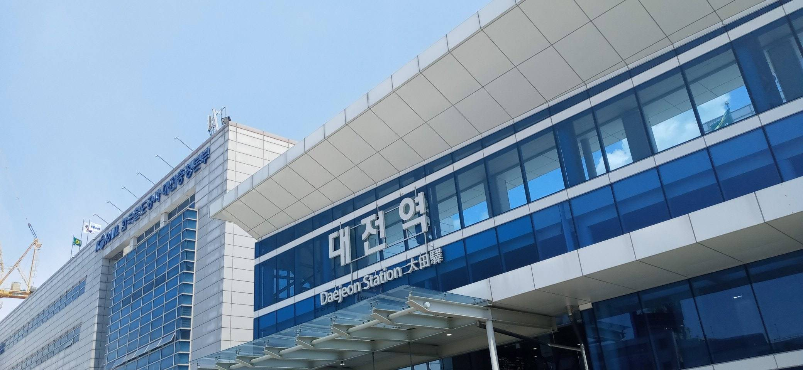
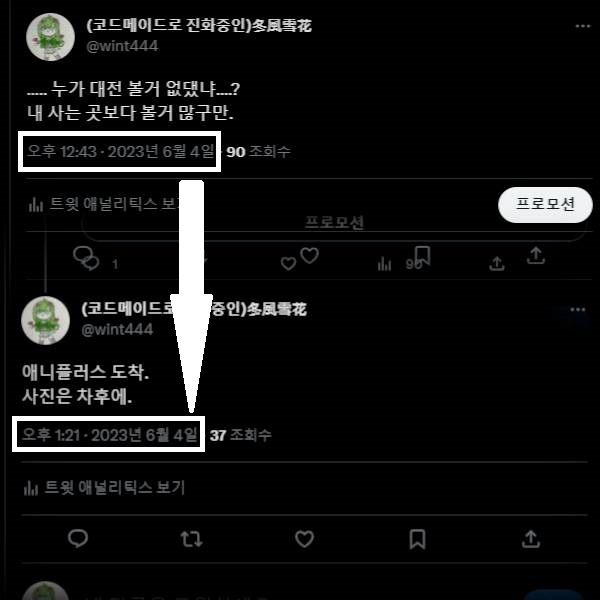
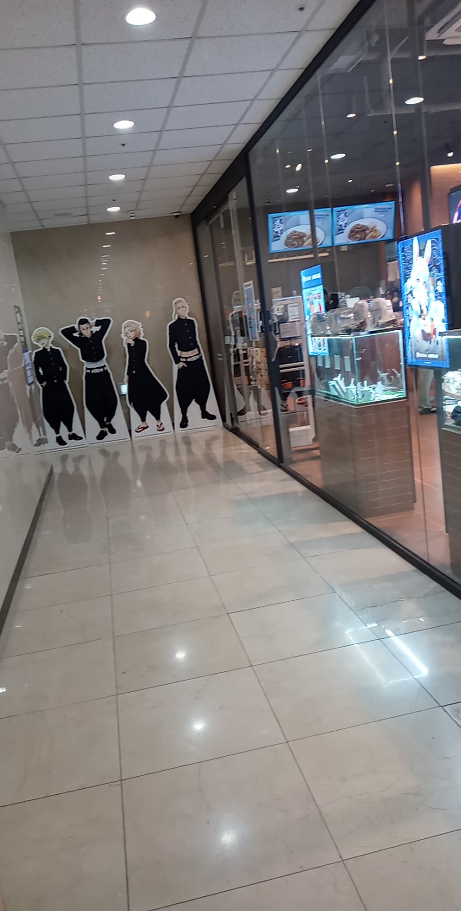
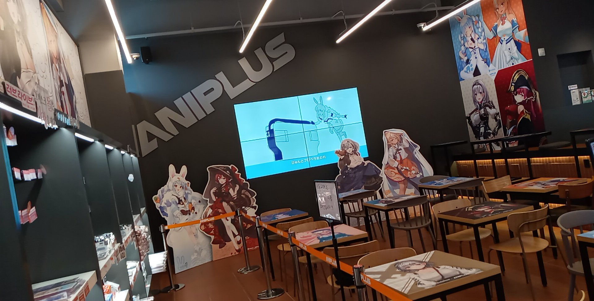
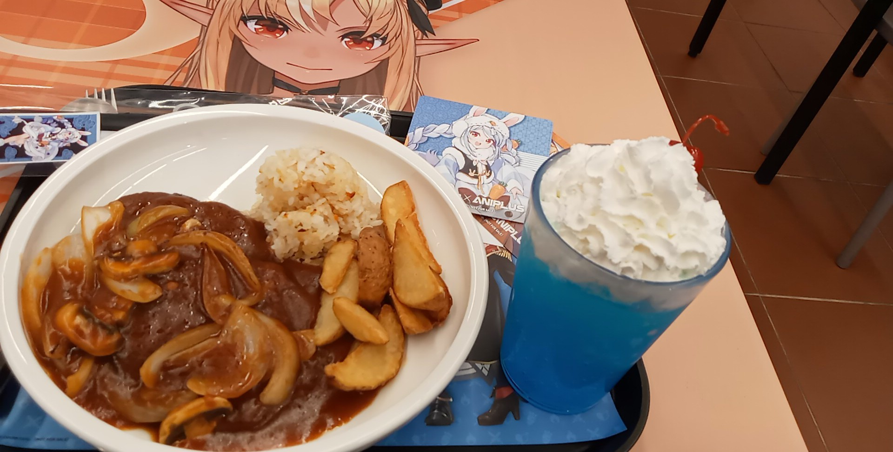
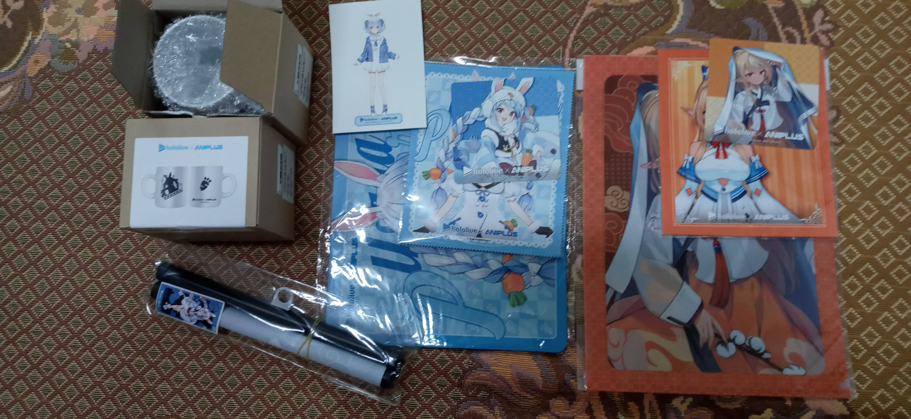
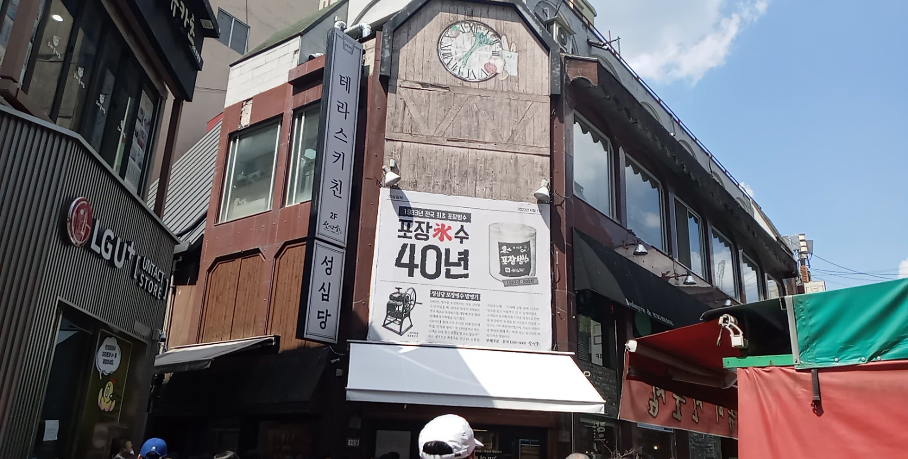

가독성이 최악일수도 있다.
양해를 바랍니다.
지금 이 글을 정리하고 있는 지금은 아니지만, 이글을 처음 쓸 당시
회송열차 시간이 한번 꼬여서 좀 늦은 시간에 예약을 했기에, 그 시간을 기다리는 동안 잠시 이야기를 써 본다.
오늘의 일이 있기까지의 여정은 대략 한달전쯤인 5월 초순으로부터 시작된다.
우연한 리트윗팅으로 그것을 봤을적, 6월쯤이면 어느정도 정리됬겠다 싶어 곧바로 그에 해당하는 계획서를 작성하였다.
서울, 부산은 행사 기간이 긴 대신 너무 멀기도 하고, “첫 주 방문 예약”이라는 최악의 조건이 하나 걸려 있어, 가장 가깝고 편히 들릴 수 있는 대전으로 정하고 대략적으로 구매하고픈 물품을 정리하며 예산안을 작성하였다.
예산작성쪽으로 한가지 아쉬운점이 있다면, 계획안 까지는 좋았으나 한 달 내내 변칙적인 지출이 너무 많았던 관계로, 본 목표
금액을 완전히 채우진 못해 결국 다른 파트에서 부족분만큼 차출해와 그 뒤는 미래의 나에게 맡기기로 했다만…
어느 파트인지는 레드테이프로 봉인해 두기로 할것이다.
어찌됬든 계획한것과 같이 모든 출발 채비를 마치고 대전에 도착한다.
10시 출발, 걸어서 역까지 30분 열차로 한 시간 또 걸어서 30분.
서그렇게 약 2시간의 여정으로 12시에 애니플러스에 도착해야 할터이지만....,
실제 도착시간은 무려 오후 한시!
사실 10시는 미리 출발한거고 실제 열차 도착 시간은 12시이지만, 도착 후 잠시 이곳저곳 둘러본다고 반 시간 놀았다. ㅋㅋㅋ.....
오자마자 덥다고 지하상가에 처박혀서 멍때리며 돌아다니질 않나,
문명 물건 처음보는 원시인마냥 돌아다니는 청소 로봇한태 모든 시선을 다 뺐기질 않나,
막상 위로 올라갔는데 gps잘못 읽어서 반대방향으로 돌고 있질 않나...
ㅋㅋㅋㅋ.......
그렇게 애니플러스 도착.
 처음에만 좀 머묻거리다 시킬 음식을 주문하고, 그것을 기다리며 장부를 작성하고 있었다.
느긋히 장부를 다 올리고도 음식이 오지 않자, 주변을 둘러보며 화면감상에 취해 있었다.
평소 다른 이들이 부르는것만 듣다가 센쵸 본인이 직접 부른거를 들어보니, 여러의미로 장난 아니구나 라는것만 느꼈다.
참고로 센쵸파트 사진은 못찍었다. 아니 안찍었다…;;페코라는 뭐 예상대로... 개쩌는 노래. ㅇㅇ
플레어(표기상으론 후레아렌다, 근대 적힌건 영문명엔 플레어인데?)노래는 첨들어보는데 개쩔게 밝은 곡이다
만약 시간이 있다면, 플레어곡도 한번 들어봐야겠다.
마지막으로 단쵸 노래 못부른단 새끼는 나와라.
저거 못부르는거 아니다.
진짜 못부르는게 어느수준인지 경험시켜줄까?
사실, 노래 2개가 한꺼번에 섞여들어서 제대로 안들리긴 했다...
그렇게 멍때림과 감상을 반복한 끝에, 음식도착.
딱 연출대로 나온 그것.
두부스테이크... 라는데, 잘라본 느낌은 뭔가 진짜 고기자르는 느낌+식감이 든다.
근대 향만큼은 분명히 두부인데, 신기할정도.
지금 먹는 이 식감 그대로 기억해서 차후에 집에서 제현해 보고 싶어진다.
사이드... 로 나온 밥은 전형적인 누룽지+볶음밥.
그냥 평소에 먹던 볶음밥에서 웤+강불 정도면 제현 가능할거 같은 수준.
(문젠 집에 그게 없다? ㅋㅋㅋ)
마지막엔 적당한 슬라이싱 감자와 양파. 그리고 스무디.
생각외로 가성비 구성이여서 나름 괜찮은 식사를 진행했다.
대략 다 먹은 후, 사진을 몇장 찍고 슬슬 리스트로 정해두었던 것을 담아 구매했다.
5만원 특전으로 받은것도 확인해 보고, 다음 장소로 이동한다.
추가로, 이때 받은 특전이랑 사은품세트가 어쩨선지 페코라 페코라 페코라....
(플레어 비율도 있지만 피코라가 압도적이라.)
정말 파랑파랑하다.
이전부터 생각한건데, 난 무슨 하늘색과 관련해 뭔가 있는거 같다.
진짜로.
언젠가 5기 콜라보도 있을때, 또 이런식으로 라미의 특전을 받으면 아마 좋아 죽을듯.
그렇게 이동한 곳은 성심당.... 인데, 잘못갔다.
장확하겐 이건 진짜로 날짜를 잘못잡았다.
주말+엔데믹+월초+6월 휴가(6.02~6.07)의 아주 풀하우스러쉬로 사람이 미어터지는 중인것이다.
(대충 사진2)
그냥 성심당은 “이것에 가봄” 정도만 느낀체, 돌아가기로 한다.
태워먹은 금액 : 왕복비(1.1)+기타 음료(1.0)+콜라보상품(5.1)+카페식단(3.4) = 거진 10만원.
이마 집 공간이 조금이라도 더 있었으면, 눈 돌아가가지고 30만원어치 이상을 지를 뻔.
그렇게 집으로 귀환하고 대충 5시간넘게 마작이나 침.
(마작 팟 상시 구함)
이글을 쓴 후기.
혹시나 했는데, 역시나였다.
두부스테이크 관련 레시픽 있을까 그대로 검색해봤는데 바로 나왔다.
또한 그걸 토대로 원가 계산을 해 보았니 가성비 픽은 아니었다.
그레도 뭐, 오랫만에 즐기다 온거인데다가 나름, 즐거웠으니 됬다.
추가로, 제료도 금방구할 수 있을것 같긴 하지만 이번 6월달은 무리고(비어버린 텅장을 체워야한다. ㅠㅠ), 7월달 쯤에 한번 시도 해볼만 할거같다.